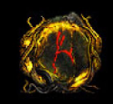

Queste sono le Blight
Queste sono le Blighted
Queste sono le Ravaged

Qualsiasi mappa potrebbe spawnare con una Blight dentro, è la forma più semplice da affrontare
Le mappe Blighted sono differenti dalle normali e presentano questa forma
Le Ravaged sono l'ultimo tier di difficoltà, non approcciatele se non con build endgame con almeno ~1mil dps